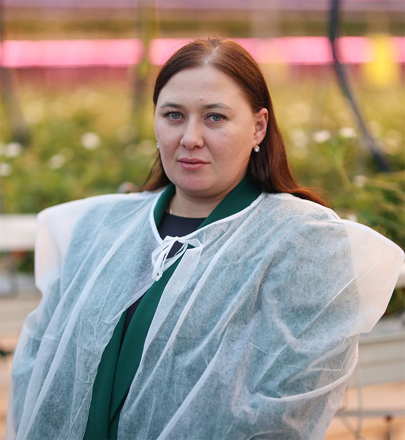

Обращаю внимание на аромат, исходящий от ягод, – не ожидала услышать его зимой. Екатерина Александровна улыбается, говорит, что их клубника хоть и зимняя, но ничем не отличается от той, которую выращивают летом на грядках.
— Мы делаем ставку исключительно на биологическую защиту, поэтому наша ягода - продукт максимально экологичный, — объясняет специалист. — Эту клубнику можно смело пробовать прямо с куста. Безопасность подтверждаем регулярными исследованиями в аттестованной лаборатории. Согласно действующим регламентам строго контролируем уровень нитратов, содержание тяжелых металлов и пестицидную нагрузку. Да, биологические методы защиты обходятся недешево, но безупречное качество и доверие покупателя того стоят.